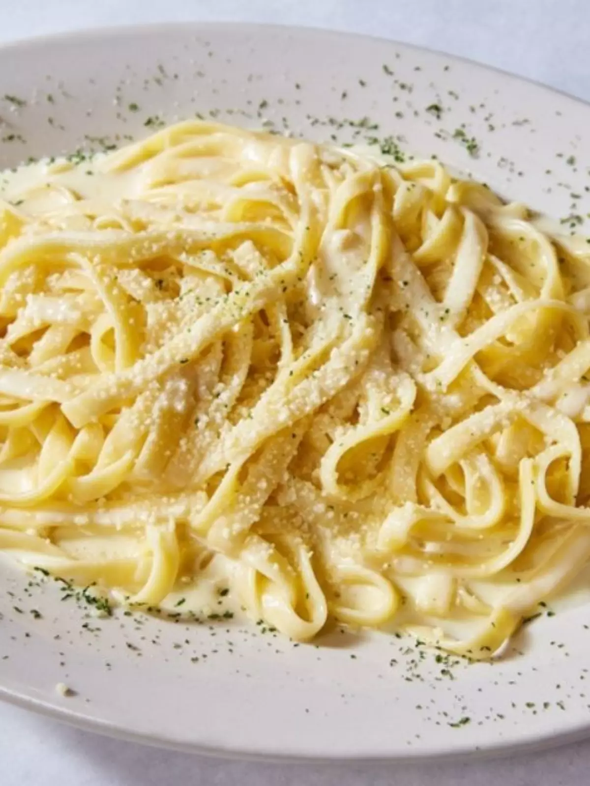

Alfredo Pasta
Ingredients
- 4 cups of fresh milk cream
- 3 tablespoons of butter
- 3 smashed garlic cloves
- 450g of fettucini dry pasta
- 110g of fine grinded parmesan cheese
- fresh grinded black pepper
How to prepare
- Wait it to cool for a bit and add the garlic, the pepper and the dry herbs. Mix it up well.
- In a big frying pan put the butter, after it melts, add the garlic and let cook until you start feeling the smell, for like 20s
- Add the recuded cream and let it boil in low heat
- Cook your fettucini aldente drain it and reserve 1 cup of the cooking water
- Add the pasta to the frying pan and with the cream and mix it up with the parmesan and a good amount of black pepper (I love it!).
- Add the cooking water, enough to get to a creamy texture.
- Serve it immediately
